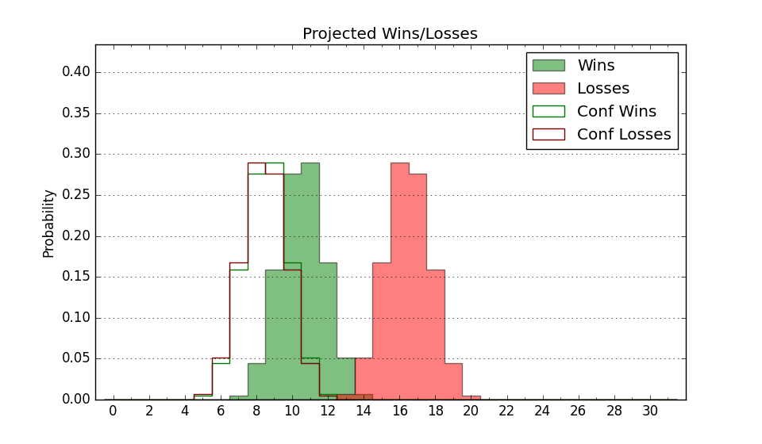

7-13 (Overall)
Net: -17.4 (326th)
Off: 95.0 (348th)
Def: 112.4 (245th)
SoR: 0.0 (107th)
| Home | Game Probabilities | Conferences | Preseason Predictions | Odds Charts | NCAA Tournament |
| City: | West Haven, Connecticut | |
| Conference: | Northeast (6th)
| |
| Record: | 5-5 (Conf) 7-13 (Overall) | |
| Ratings: | Comp.: -17.1 (323rd) Net: -17.4 (326th) Off: 95.0 (348th) Def: 112.4 (245th) SoR: 0.0 (107th) |
| Remaining | ||||||
|---|---|---|---|---|---|---|
| Date | Opponent | Win Prob | Pred. | |||
| 2/7 | Chicago St. (348) | 75.9% | W 69-62 | |||
| 2/12 | Central Connecticut (295) | 55.0% | W 65-64 | |||
| 2/14 | LIU Brooklyn (198) | 31.4% | L 63-69 | |||
| 2/19 | Stonehill (328) | 66.7% | W 62-57 | |||
| 2/21 | @ Fairleigh Dickinson (326) | 35.8% | L 62-66 | |||
| 2/26 | @ Wagner (327) | 36.4% | L 64-67 | |||
| 2/28 | Le Moyne (290) | 53.6% | W 68-67 | |||
| Previous | Game Score | |||||
| Date | Opponent | Win Prob | Result | Off | Def | Net |
| 11/3 | @Connecticut (10) | 0.4% | L 55-79 | 10.7 | 10.2 | 20.9 |
| 11/7 | Columbia (164) | 25.5% | L 53-71 | -21.6 | -5.7 | -27.3 |
| 11/8 | Penn St. (125) | 17.7% | L 43-87 | -25.2 | -17.0 | -42.2 |
| 11/10 | @UMass Lowell (333) | 38.6% | W 73-67 | 5.1 | 10.1 | 15.2 |
| 11/15 | Delaware St. (358) | 83.5% | W 65-52 | -3.2 | 8.8 | 5.6 |
| 11/18 | @Seton Hall (55) | 2.2% | L 45-68 | -5.0 | 5.8 | 0.8 |
| 12/6 | @Boston College (143) | 7.3% | L 63-67 | 21.3 | 0.6 | 21.9 |
| 12/10 | @NJIT (319) | 33.8% | L 64-70 | 0.6 | -2.5 | -1.9 |
| 12/22 | @Fordham (188) | 11.0% | L 47-65 | -14.7 | 5.5 | -9.2 |
| 12/29 | @Vanderbilt (13) | 0.5% | L 53-96 | -2.6 | -9.4 | -12.0 |
| 1/2 | @Stonehill (328) | 37.0% | W 70-55 | 13.8 | 13.4 | 27.2 |
| 1/4 | @Central Connecticut (295) | 26.4% | L 61-72 | 5.8 | -10.8 | -5.1 |
| 1/8 | @Le Moyne (290) | 25.3% | L 47-73 | -20.9 | -10.9 | -31.7 |
| 1/10 | Fairleigh Dickinson (326) | 65.5% | W 65-55 | -1.3 | 11.7 | 10.5 |
| 1/17 | Wagner (327) | 66.1% | W 80-74 | 25.4 | -18.1 | 7.3 |
| 1/19 | @Chicago St. (348) | 48.1% | W 62-56 | 3.1 | 8.6 | 11.7 |
| 1/23 | Mercyhurst (286) | 53.1% | L 57-61 | -3.4 | -5.4 | -8.8 |
| 1/29 | @Mercyhurst (286) | 24.9% | L 51-70 | -9.9 | -9.6 | -19.5 |
| 1/31 | @St. Francis PA (355) | 55.0% | W 81-69 | 19.8 | -1.7 | 18.2 |
| 2/5 | @LIU Brooklyn (198) | 11.8% | L 55-60 | -4.2 | 16.7 | 12.5 |
| Stats & Trends | |||||
|---|---|---|---|---|---|
| Current | Day | Week | Month | Season | |
| Composite | -17.1 | -0.0 | +1.9 | -1.0 | -7.1 |
| Comp Rank | 323 | -- | +15 | -5 | -69 |
| Net Efficiency | -17.4 | -0.0 | +2.3 | +0.2 | -- |
| Net Rank | 326 | -- | +15 | -2 | -- |
| Off Efficiency | 95.0 | -0.0 | +1.0 | +0.9 | -- |
| Off Rank | 348 | -1 | +5 | -4 | -- |
| Def Efficiency | 112.4 | +0.0 | +1.3 | -0.6 | -- |
| Def Rank | 245 | +1 | +25 | +4 | -- |
| SoS Rank | 295 | -2 | +2 | -133 | -- |
| Exp. Wins | 10.5 | -0.0 | +0.7 | -0.9 | -4.4 |
| Exp. Conf Wins | 8.5 | -0.0 | +0.7 | -0.9 | -3.0 |
| Conf Champ Prob | 0.0 | +0.0 | -0.0 | -2.7 | -28.7 |

| Advanced Stats | ||
|---|---|---|
| Stat | Value | Rank |
| Off Eff FG % | 0.476 | 301 |
| Off Ast Ratio | 0.132 | 278 |
| Off ORB% | 0.220 | 352 |
| Off TO Rate | 0.174 | 333 |
| Off FT Ratio | 0.278 | 338 |
| Def Eff FG % | 0.546 | 290 |
| Def Ast Ratio | 0.158 | 255 |
| Def ORB% | 0.290 | 126 |
| Def TO Rate | 0.142 | 214 |
| Def FT Ratio | 0.306 | 66 |